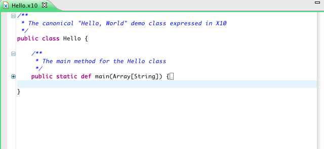

Editor Basics and Launching
To start using X10DT, the first step is to make sure that you are in the X10 perspective. If you obtained X10DT from the all-in-one zip,
then it should start up in this perspective.
To open the X10 perspective, go to
Window -> Open Perspective -> Other....
In the popup window, choose X10.
You will see a button (labeled X10) appear in the upper right corner of eclipse. This button will allow you to come
back to the X10 perspective if you happen to move away from it.

Importing X10 projects from a zip file
Given a zip file that contains an existing X10 project, follow these steps to import it into X10DT.
Go to
File -> Import...
In the Import window, select "Existing Projects into Workspace" from the General menu. Click Next. In the next window,
select "Select archive file", and enter the path for the zip file. Click Finish. Your workspace should now contain the
imported project.
Creating new X10 projects
To create an X10 project with the Java backend, go to
File -> New -> X10 Project (Java back-end)
Enter the name of the project in the window that pops up. The Project Layout defaults to creating separate folders for sources
and class files. Be sure to keep this default. In the Sample Source area, you have the choice of having the wizard create
a sample "Hello World" program, or not. This program will help you to get started with X10. Click Finish.
To create an X10 project with the C++ backend, go to
File -> New -> X10 Project (C++ back-end)
and follow similar steps as above.
Project creation wizards are also available in the context menu of the Package Explorer (the left-most view in the X10 perspective). To access
the context menu, right click anywhere in the Package Explorer.
To create a new X10 class, interface, or package, select a src folder and right click. A menu will appear that will let you choose what you wish
to create. In the popup window, simply type the name of the new entity and click Finish.
Using the editor
If you double click on an X10 file in the Package Explorer, it will open an editor for that file. The editor offers the following services:
- Syntax Highlighting
- Hover Help
If you move the mouse and hover over an entity in the editor, a small window will popup to show you information on that
entity including its documentation, if any. This feature is especially useful for vals in X10, because it shows the inferred type.

- Hyperlinking
If you press the control key (command on Mac) and hover over an entity, the entity will be underlined. If you then click, this
will take you to the definition of that entity.
- Outline View
This is the right-most view in Eclipse under the X10 perspective. If you click on an entity in the Outline View, it will take you
to that entity in the editor.

- Quick Outline
If you hit control (command on Mac) and the letter 'o', a popup window will show the outline of the current file. If you start typing the
name of an entity, the window will only show entities whose names start with what you just typed.

- Folding
By clicking on the minus signs in the left margin of the editor, you may fold a region of text.
To unfold, simply click on the corresponding plus signs.

- Content Assist
If you hit control + space, a window will appear with a selection of templates for commonly used X10 constructs and idioms. The selection of patterns
proposed is context sensitive. When you choose a template, it will be inserted in your code. You will need to edit the missing parts to adapt the
template to your code. If you hit control + space after a dot '.', it will give you all the members of the type of the receiver.
Note that Content Assist currently only works when your file compiles successfully. If there is any compilation error, which often happens
as you are typing, then this feature will not work. This shortcoming will be fixed in a future release.

When working with multiple editors, be sure to keep only a few open at any time (<10). This shortcoming is due to memory issues and will be
addressed in a future release.
If you have a file that is larger than 1K lines of code, the services of the editor might be slow. In that case, you may turn off most services
by going to the Preferences page, select X10, and select "Disable editor features (hyperlinking, hover help, etc.) for performance
scalability". This will leave you with only syntax highlighting, outline view, and folding, but will make the editor more responsive.
Building
To build an X10 file, simply hit control (command on Mac) + s . The builder will then start compiling your file. There is an indicator on the bottom right
corner of Eclipse that shows the progress for the builder.
To clean a project go to
Project -> Clean...
If there are any compilation errors, they will appear in the Problems View, located at the bottom in Eclipse. Clicking on a problem will take you to its location
in an editor.
If the Problems View indicates that an internal compiler error has occurred, then open the Error Log:
Window -> Show View -> Other...
Choose the Error Log from the General folder. The Error Log will contain internal errors that may have occurred during the execution
of X10DT and other parts of Eclipse. If you see any errors pertaining to X10DT, please open a jira item (see http://x10-lang.org).
Launching
To run an X10 program in an X10 Java-backend project, simply right click on the class that has the Main method in the Package Explorer, and
select
Run As -> X10 Application (Java back-end)
The results of the program will be displayed in the Console view at the bottom in Eclipse.
To run an X10 program in an X10 C++-backend project, open the platform configuration file (x10_platform.conf) located at the root directory
in the project. The platform configuration has 2 tabs: Connection and Communication Interface and C++ Compilation and Linking. These pages
will allow you to specify how your program will compile and execute on possibly multiple machines. The communication interface allows you to select the type of interface
and to configure it. The second tab allows you to specify the configuration of C++ compilation and linking.
The simplest configuration (default settings) is to compile and execute
locally on your own machine
(For more details on the platform configuration see Remote Launching and Debugging Basics).
When you have finished editing the configuration file, click on Validate Configuration. This ensures that your settings are appropriate for your
system. Then click on Save Configuration.
You are now ready to run your X10 program with the C++ back-end. Select the type with the main method, right click and select
Run As -> X10 Application (C++ back-end)
You may also go to
Run -> Run Configurations...
to see all of the run configurations that you have so far created, and modify them further. The run configuration tabs allow you to
enter program parameters (For more information see Remote Launching and Debugging Basics).
Conversions between C++ and Java back-ends
To convert an X10 project from C++ back-end to Java back-end, select the project in the Package Explorer, right click, and select
Configure -> Convert to X10 Project with Java back-end
and similarly for converting from Java back-end to C++ back-end.
It is often convenient to start prototyping a program in the Java back-end, and then convert it to the C++ back-end.